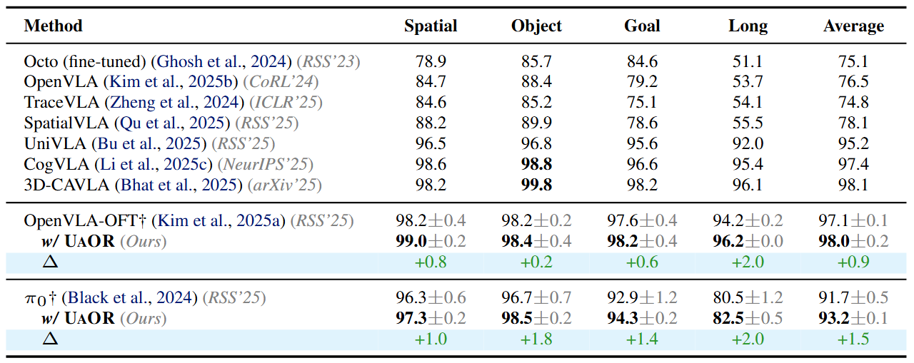
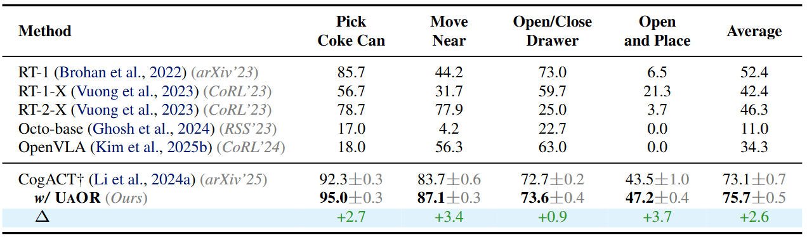
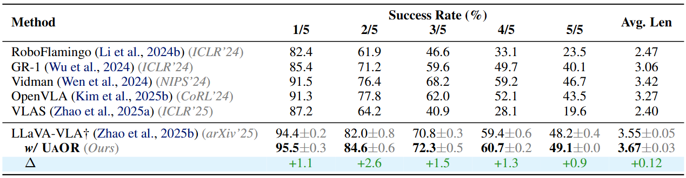
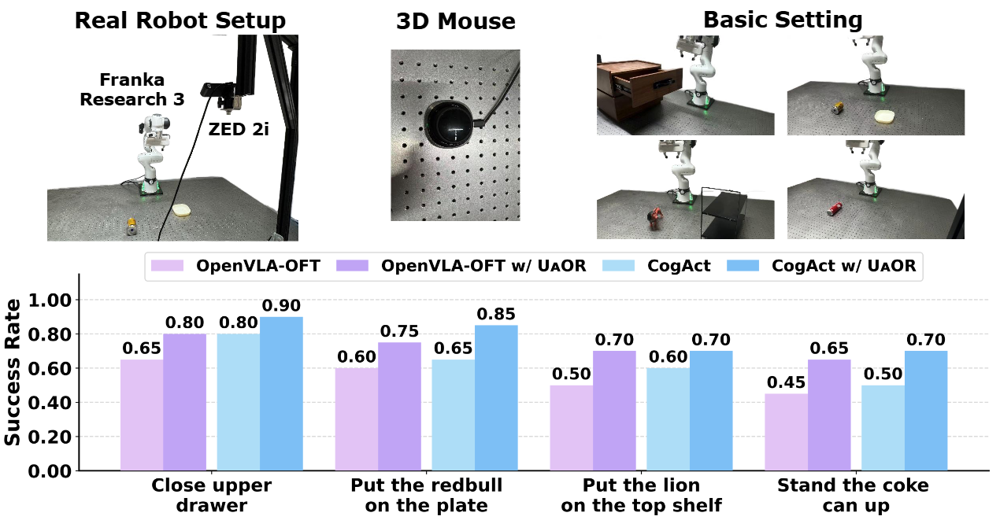

LIBERO
We evaluate UAOR on the LIBERO benchmark, which provides 4 task suites—Spatial, Object, Goal, and Long—each containing 10 tasks with 50 human-teleoperated demonstrations per task. We apply UAOR to two representative baselines: OpenVLA-OFT (7B) and π0 (3B). UAOR delivers consistent gains across all four suites: based on OpenVLA-OFT, it achieves a remarkable average success rate of 98.0% (+0.9), comparable to 3D-CAVLA (98.1%) but without auxiliary depth inputs, CoT reasoning, or fine-tuning. It also boosts π0 by +1.5 points on average.

Table 1: Performance comparison on the LIBERO benchmark.
LIBERO Task Demonstrations (OpenVLA-OFT w/ UAOR)
Spatial: Pick up the black bowl from table center and place it on the plate
Spatial: Pick up the black bowl on the wooden cabinet and place it on the plate
Object: Pick up the alphabet soup and place it in the basket
Object: Pick up the orange juice and place it in the basket
Goal: Open the middle drawer of the cabinet
Goal: Put the wine bottle on the rack
Long: Put both the alphabet soup and the tomato sauce in the basket
Long: Put the yellow and white mug in the microwave and close it
SIMPLER
We evaluate UAOR on the SIMPLER benchmark using CogACT (7B) as the baseline. UAOR raises the average success rate by +2.6 points (73.1 → 75.7; ~3.6% relative). The improvements are most evident on Pick coke can (+2.7), Open top drawer and place apple (+3.7), and Move near (+3.4), with a smaller gain on Open/Close drawer (+0.9). These tasks demand precise localization and placement under visual clutter.

Table 2: Performance comparison on the SIMPLER benchmark.
CALVIN
We evaluate on the CALVIN ABC→D benchmark using LLaVA-VLA (0.5B). UAOR improves success on every track and increases the average consecutive completion length by +0.12 (3.55 → 3.67; ~3.4% relative). The consistent gains across progressively longer task chains indicate better maintenance of observation fidelity, leading to reduced uncertainty in downstream action prediction.

Table 3: Performance comparison on the CALVIN benchmark.
Real-World Experiments
We perform real-robot experiments with a Franka Research 3 robot arm equipped with a parallel-jaw gripper and a ZED 2i camera. We evaluate on four tasks: 1) Close the upper drawer, 2) Put the redbull on the plate, 3) Put the lion on the top shelf, and 4) Stand the coke can up. We fine-tune both OpenVLA-OFT and CogACT on each task using 50 expert trajectories and evaluate each task with 20 test rollouts.
For OpenVLA-OFT, UAOR achieves consistent performance improvements across all four tasks, with the average success rate increasing from 55.0% to 72.5% (+31.8% relative). The largest relative gain appears on the most challenging task, Stand the coke can up (+44.4% relative). For CogACT, UAOR boosts the average success rate from 63.8% to 78.8% (+23.5% relative). Notably, in the Put the redbull on the plate task, UAOR increases the success rate by an absolute 20%.

Figure 3: Real-world evaluation results on both OpenVLA-OFT and CogACT.
Real-World Task Demonstrations (OpenVLA-OFT w/ UAOR)
Close the upper drawer
Put the redbull on the plate
Put the lion on the top shelf
Stand the coke can up